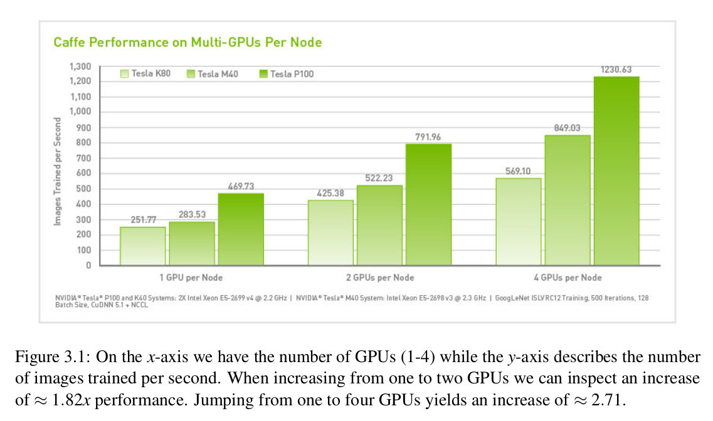

deep-learning-for-computer-vision-with-python-imagnet
Table of Contents
- 1. Introduction
- 2. Training Network Using Muliple GPUs
- 3. ImageNet
- 4. Preparing the ImageNet Dataset
- 5. Traing Alexnet on Imagenet
- 6. Case Study: Vehicle Identification
- 7. Case Study: Age and Gender Prediction
- 8. Faster R-CNNs
- 9. training a Faster R-CNN From Scratch
- 10. Signle Shot Detectors(SSDs) (SSD: Single Shot MultiBox Detector)
1 Introduction
Experiment procedure:
- The exact process when training the network.
- The particular results.
- The changes made in the next experiment.
2 Training Network Using Muliple GPUs
While backends such as Theano and Tensorflow (and therefor Keras) do support multiple GPU training, the process to set up a mulitple GPU experiment is arduous and non-trival. (Thu Sep 26 22:42:30 CST 2019)
Therefore, for deep neural networks and large datasets, I highly recommend using the mxnet library. The mxnet deep learning library (written in C++) provides bindings to the Python programming language and specializes in distributed, multi-machine learning.
2.1 How Many GPUs Do I Need?
The benefit of using multiple GPUs is obvious – parallelization. The more GPUs we can throw at the problem, the faster we can train a given network.
You are now entering the world of state-of-the-art deep learning where experiments can take days, weeks, or even in some rare cases, months to complete – this timeline is totally and completely normal.
2.2 Performance Gains Using Multiple GPUs

3 ImageNet
ILSVRC (ImangeNet Large Scale Visual Recognition Challenge) is the de facto benchmark of evaluating image classification algorithms.
3.1 The ImageNet Dataset
ImageNet is actually a project aimed at labeling and catogorizing images into all its 22000 catogories based on defined set of words and phrases.
Images follows the WordNet hierarchy. Each meaningful word/phrase inside WordNet is called a "synonym set" or synset for short. Within the ImageNet project, images are categorized according to these synsets; the goal of the project is to have 1,000+ images per synset.
3.1.1 ILSVRC
In the context of computer vision and deep learning, whenever you hear people talking about image net, they are likely referring to the ILSVRC. The goal of the image classification track in this challenge is to train a model that can correctly classify an image into 1,000 separate object categories.
Images in ImageNet vary dramatically across object scale, number of instances, image clutter/occlusion, deformability, texture, color, shape, and real-world size. This dataset is challenging, to say the least, and in some cases, it’s hard for even humans to correctly label. Because of the challenging nature of this dataset, deep learning models that perform well on ImageNet are likely to generalize well to images outside of the validation and testing set – this is the exact reason why we apply transfer learning to these models as well.
3.2 Obtaining ImageNet
image-net.org
3.3 My method
3.3.1 Google
google ILSVRC2015_CLS-LOC
http://image-net.org/challenges/LSVRC/2015/download-images-3j16.php
development kit: http://image-net.org/image/ILSVRC2015/ILSVRC2015_devkit.tar.gz
object classification/localization: http://image-net.org/image/ILSVRC2015/ILSVRC2015_CLS-LOC.tar.gz
3.3.2 Kaggle
download with kaggle is faster.
kaggle competitions download -c imagenet-object-localization-challenge
4 Preparing the ImageNet Dataset
.rec format (produced by mxnet im2rec tool) is not only more compact than HDF5, but it's more I/O efficient as well.
Imagenet Dataset Structure (download loadded from Kaggle):
- ILSVRC
- Annotations (used for the localization challenge)
- Data
- CLS-LOC
- test
- train
- val
- test
- CLS-LOC
- ImageSets
- CLS-LOC
- test.txt (100000)
- train_cls.txt (1281167)
- train_loc.txt
- val.txt (50000)
- test.txt (100000)
- CLS-LOC
- Annotations (used for the localization challenge)
- LOC_synset_mapping.txt.zip (for Kaggle)
- LOC_train_solution.csv.zip (for Kaggle)
- LOC_val_solution.csv.zip (for Kaggle)
The benefit of using the train_cls.txt and val.txt files is that we do not have to list the contents of the training and validation subdirectories using paths.list_images
Development Kit Structure:
- devkit
- COPYING (copyright)
- data
- ILSVRC2015_clsloc_validation_blacklist.txt (images that are too ambiguous in their class label, should not be included in validation set)
- ILSVRC2015_clsloc_validation_ground_truth.mat
- ILSVRC2015_clsloc_validation_ground_truth.txt (with val.txt to build validation set)
- ILSVRC2015_det_validation_blacklist.txt
- ILSVRC2015_det_validation_ground_truth.mat
- ILSVRC2015_vid_validation_ground_truth.mat
- map_clsloc.txt (maps WordNet IDs to human readable class labels)
- map_det.txt
- map_vid.txt
- meta_clsloc.mat
- meta_det.mat
- meta_vid.mat
- ILSVRC2015_clsloc_validation_blacklist.txt (images that are too ambiguous in their class label, should not be included in validation set)
- evaluation (contrains MATLAB routines for evaluating predictions on the testing set)
- readme.txt
- COPYING (copyright)
Imagenet preparation procedure (with mxnet)
- Download Imagenet
- Parse into .lst files
- Build .rec files with imr2rec command
The beauty of this appoach is that the .rec file only have to generated once -- we can use these record files for any ImageNet classification experiment we wish to perform.
5 Traing Alexnet on Imagenet
Sharing the "story" of how the network was trained, and not just the final result, will help you in your own deep learning experiments. Watching others, and then learning by experience, is the optimal way to quickly master the techniques required to be successful working with large image datasets and deep learning.
6 Case Study: Vehicle Identification
7 Case Study: Age and Gender Prediction
one-off accuracy:
whether the ground-truth class label matches the predicted class label or if the ground-truth label exists in the two adjacent bins.
classes: 0-2, 4-6, 8-13, 15-20, 25-32, 38-43, 48-53, and 60+ predicted: 15-20 ground-truth: 25-32 one-off: correct One-off accuracy is not the same thing as rank-2 accuracy. 4-6 with probability 63.7% 48-53 with probability 36.7% ground-truth: 48-53 one-off: incorrect rank-2: correct
8 Faster R-CNNs
8.1 Object Detection and Deep Learning
Object detection has three primary goals:
- A list of bounding boxes, or the (x,y) coordinates for each object in an image
- A class label associated with each bounding box
- The probability/confidence score associating with each bounding box and class labels
8.1.1 Measuring Object Detector Performance
When evaluating object detector performance we use an evaluation metric called Intersection over Union (IoU).
Any algorithm that provides predicted bounding boxes (and optionally class labels) as output can be evaluated using IoU.
In order to apply IoU to evaluate an arbitrary object detector, we need:
- The ground-truth bounding boxes
- The predicted bounding boxes from our model
- If you want to compute recall along with precision, you'll also need the ground-truth class labels and predicted class labels
An IoU score > 0.5 is normally considered a "good" prediction.
8.1.2 Why do we use Intersection over Union?
In reality, it's extremely unlikely that the (x, y)-coordinates of our predicted bounding box are going to exactly match the (x, y)-coordinates of the ground-truth bounding box. Due to varying parameters of our model, such as layer used for feature extraction, anchor placement, loss function, etc., a complete and total match between predicted and ground-truth bounding boxes is simply unrealistic.
Because coordinates will not match exactly, we need to define an evaluation metric that rewards predicted bounding boxes for heavily overlapping with the ground-truth, as Figure 15.2 demonstrates.
8.1.3 Mean Average Precision (mAP)
In the context of machine learning, precision typically refers to accuracy – but in the context of object detection, IoU is our precision.
However, we need to define a method to compute accuracy per class and across all classes in dataset. To accomplish this goal, we need mean Average Precision (mAP)
To compute average precision for a single class, we determine the IoU of all data points for a particular class. Once we have the IoU we divide by the total class labels for that specific class, yielding the average precision.
To compute the mean average precision, we compute the average IoU for all N classes, yielding the mean average precision.
mAP@0.5 : in order of an object in the testing set to be marked as a "positive dection" it must have, at least, 0.5 IoU with the ground-truth.
8.2 The (Faster) R-CNN Architecture
8.2.1 A Brief History
- R-CNN
steps:
- input a image
- extract region proposals (i.e., regions of the image that potentially contain objects) using an algorithm such as selective search
- use transfer learning to compute features for each proposal using the pre-trained CNN
- classify each proposal using the extracted features with a SVM
Looking at the above pipeline, we can clearly see inspirations and parallels from traditional object detectors such as Dalal and Triggs seminal HOG + Linear SVM framework: 1. Instead of applying an exhaustive image pyramid and sliding window, we are swapping in a more intelligent Selective Search algorithm 2. Instead of extracting HOG features from each ROI, we’re now extracting CNN features 3. We’re still training SVM(s) for the final classification of the input ROI, only we’re training this SVM on the CNN features rather than the HOG ones
The primary reason this approach worked so well is due to the robust, discriminative features learned by a CNN.
The problem with the original R-CNN approach is that it’s still incredibly slow. And furthermore, we’re not actually learning to localize via deep neural network. Instead, we’re leaving the localization to the Selective Search algorithm — we’re only classifying the ROI once it’s been determined as "interesting" and "worth examining" by the region proposal algorithm.
- input a image
- Fast R-CNN
Fast R-CNN algorithm still utilized Selective Search to obtain region proposals, but a novel contribution was made: Region of Interest (ROI) Pooling.
We apply the CNN to the entire input image and extract a feature map from it using our network. ROI Pooling works by extracting a fixed-size window from the feature map and then passing it into a set of fully-connected layers to obtain the output label for the ROI.
The primary benefit here is that the network is now, effectively, end-to-end trainable:
- input an image and associated ground-truth bounding boxes
- extract the feature map
- apply ROI pooling and obtain the ROI feature vector
- use two sets of fully-connected layers to obtain
- the class label predictions
- the bounding box locations for each proposal
- the class label predictions
Performance suffered dramatically at inference (i.e., prediction) time by being dependent on the Selective Search (or equivalent) region proposal algorithm.
(To make the R-CNN architecture even faster we need to incorporate the region proposal directly into the R-CNN.)
- input an image and associated ground-truth bounding boxes
- Faster R-CNN
The goal of the RPN is to remove the requirement of running Selective Search prior to inference and instead bake the region proposal directly into the R-CNN architecture.
The first component, the RPN, is used to determine where in an image a potential object could be. At this point we do not know what the object is, just that there is potentially an object at a certain location in the image.
The proposed bounding box ROIs are based on the Region of Interest (ROI) Pooling module of the network along with the extracted features from the previous step.
We place anchors spaced uniformly across the entire image at varying scales and aspect ratios. The RPN will then examine these anchors and output a set of proposals as to where it "thinks" an object exists.
8.2.2 The Base Network
As the above figure shows, after we input the image to the architecture, the first component we come across is the base network. The base network is typically a CNN pre-trained for a particular classification task. This CNN will be used for transfer learning, in particular, feature extraction.
One important aspect of object detection networks is that they should be fully-convolutional.
(A fully-convolutional neural network does not contain the fully-connected layers typically found at the end of a network prior to making output predictions.)
A fully-convolutional neural network enjoys two primary benefits:
- Fast, duo to all convolution operations
- Able to accept images of any spatial resolution
8.2.3 Anchors
In traditional object detection pipelines we would use either:
- a combination of a sliding window + image pyramid or
- a Selective Search-like algorithm
to generate proposals for our classifier.
The core separation between classification and object detection is the prediction of bounding boxes, or (x, y)-coordinates surrounding an object. Thus, we might expect our network to return a tuple consisting of the bounding box coordinates of a particular object.
But there is a problem with this approach:
- How do we handle a network predicting values outside the boundaries of the image?
- How do we encode restrictionns such as \(x_{min} < x_{max}\) and \(y_{min} < y_{max}\)?
It sounds out that this is a near impossible problem to solve. But is solved with a clever and novel one, called anchors. (relative position instead of absolute position)
Instead of trying to predict the raw (x, y)-coordinates of the bounding boxes, we can instead learn to predict their offsets from the reference boxes, namely: \(\Delta_{x-center}\), \(\Delta_{y-center}\), \(\Delta_{width}\), and \(\Delta_{height}\).
So where do these reference bounding boxes come from?
We need to generate the anchors ourselves without utilizing a Selective Search algorithm. To accomplish this process, we first need to uniformly sample points across an input image (Figure 15.7, left).
Here we can see an input image that is 600 × 400 pixels — we have labeled each point at a regularly sampled integer (at an interval of sixteen pixels) with a blue circle.
The next step is to create a set of anchors at each of the sampled points. As in the original Faster R-CNN publication, we'll generate nine anchors (which are fixed bounding boxes) with varying sizes and aspect ratios surrounding a given sampled point.
The colors of the bounding boxes are our scales/sizes, namely: 64 × 64, 128 × 128, and 256 × 256. For each scale we also have the aspect ratio, 1 : 1, 1 : 2, and 2 : 1. Each combination of scale and aspect ratio yields nine total anchors. This combination of scale and aspect ratio yields us considerable coverage over all possible object sizes and scales in the input image (Figure 15.7, right).
However, there is a problem here once we break down the total number of anchors generated:
- If we use a stride of 16 pixels (the default for Faster R-CNN) on a 600 × 800 image, we’ll obtain a total of 1,989 total positions. (\((\lceil 600 / 16\rceil + 1) \times (\lceil 800 / 16 \rceil +1) = 1989\))
- With nine anchors surrounding each of the 1,989 positions, we now have a total of 1, 989×9 = 17, 901 bounding box positions for our CNN to evaluate.
Luckily, with the Region Proposal Network (RPN) we can dramatically reduce the number of candidate proposal windows, leaving us with a much more manageable size.
8.2.4 Region Proposal Network (RPN)
If the goal of generating anchors is to obtain good coverage over all possible scales and sizes of objects in an image, the goal of the Region Proposal Network (RPN) is to prune the number of generated bounding boxes to a more manageable size.
The RPN accepts convolutional feature map as input. Then apply a 3x3 CONV, learning 512 filters.
These filters are fed into two paths in parallel. The first output (left) of the RPN is a score that indicates whether the RPN thinks the ROI is foreground or background. The dimensionality of this output is 2 x K where K is the total number of anchors.
The second output (right) is our bounding box regressor used to adjust anchors to better fit the object that it is surrounding. Adjusting the anchors is accomplished via 1x1 convolution, outputting a 4 x K volume. (predicting the four delta values: \(\Delta_{x-center}\), \(\Delta_{y-center}\), \(\Delta_{width}\), and \(\Delta_{height}\))
Provided the foreground probability is sufficiently large, then apply:
- Non-maxima suppression to suppress overlapping
- Proposal selection (take only the top N proposals and discard the rest)
- Training the RPN
During the training, we take our anchors and put them into two different buckets:
- Foreground: all anchors that have a 0.5 IoU with a ground-truth object bounding box.
- Background: all anchors that have < 0.1 IoU with a ground-truth object bounding box.
Based on these buckets we randomly sample between the two to maintain an equal ratio between background and foreground.
loss functions:
- for classification which measures the accuracy of the RPN predicting the foreground and background, binary cross-entropy works nicely
- for bounding box regression, the loss function only operates on the foreground anchors as background anchors would have no sense of a bounding box. (Girshick used Smooth L1 loss)
- Foreground: all anchors that have a 0.5 IoU with a ground-truth object bounding box.
8.2.5 Region of Interest (ROI) Pooling

The goal of the ROI Pooling module is to accept all N proposal locations from the RPN module and crop out feature vectors from the convolutional feature map.
Cropping feature vectors is accomplished by:
- Using array slicing to extract the corresponing patch from the feature map
- Resizing it into 14 x 14 x D where D is the depth of the feature map
- Applying a max pooling operation with 2 x 2 strides, yielding a 7 x 7 x D feature vector.
The final feature vector is fed into the Region based Convolutional Neural network.
8.2.6 Region-based Convolutional Neural Network
The final stage is the Region-based Convolutional Neural Network (R-CNN). This module serves two purposes:
- Obtain the final class label predictions for each bounding box location based on the cropped feature map from the ROI Pooling module
- Further refine the bounding box prediction (x, y)-coordinates for better prediction accuracy
These two outputs again imply that we'll have two loss functions:
- Categorical cross-entropy for classification
- Smooth L1 loss for bounding box regression
8.2.7 The Complete Training Pipeline
We have a choice to make when training the entire Faster R-CNN pipeline. The first choice is to train the RPN module, obtain satisfiable results, and then move on to training the R-CNN module. The second choice is to combine the four loss functions (two for the RPN module, two for the R-CNN module) via weighted sum and then jointly train all four. Which one is better?
In nearly all situations you’ll find that jointly training the entire network end-to-end by minimizing the weighted sum of the four loss functions not only takes less time but also obtains higher accuracy as well.
8.3 Summary
The architecture includes four primary components:
- base network (feature extract)
- RPN (region proposal)
- ROI pooling (extract feature from RPN)
- R-CNN (predict the label and box)
9 training a Faster R-CNN From Scratch
9.1 The LISA Traffic Signs Dataset
The dataset consists of 47 different United States traffic sign types. There are a total of 7,855 annotations on 6,610 frames. Road signs vary in resolution, from 6 × 6 to 167 × 168 pixels. Furthermore, some images were captured in a lower resolution 640 × 480 camera while others were captured on a higher resolution 1024 × 522 pixels. Some images are grayscale while others are color. The variance in camera quality and capture color space make this an interesting dataset to study in terms of object detection.
9.2 Tensorflow Object Detection API Install
Implementing the entire Faster R-CNN architecture from scratch has the following defects:
- long code
- object detection libraries and packages tend to be fragile in their nature as custom layers and loss methods are used.
TFOD API install:
- download code
https://github.com/tensorflow/models
- install protobuf
if not
pip install protobuf
- add python path
add the following to ~/.bashrc
export PYTHONPATH=$PYTHONPATH:~/models/research:~/models/research/slim # change the directory
9.3 Training Your Faster R-CNN
9.3.1 A TensorFlow Annotation Class
When working with the TFOD API, we need to build a dataset consisting of both the images and their associated bounding boxes.
What makes up "data point" for object detection? According to the TFOD API, we need to supply a number of attributes, including:
- The TensorFlow-encoded image
- The width and height of the image
- The file encoding of the image (i.e., JPG, PNG, etc.)
- The filename
- A list of bounding box coordinates, normalized in the range [0, 1], for the image
- A list of class labels for each bounding box
- A flag used to encode if the bounding box is "difficult" or not (you’ll almost always want to leave this value as "0", or "not difficult" so TensorFlow trains on it — the difficult flag is a remnant of the VOC challenge).
9.3.2 A Critical Pre-Training Step
One of the biggest mistakes I see deep learning developers, students, and researchers make is rushing and not double-checking their work when building a dataset. Be warned: rushing will only cause you problems, especially in the context of object detection.
9.3.3 Configuring the Faster R-CNN
Training our Faster R-CNN on the LISA dataset is a four step process:
- Download the pre-trained Faster R-CNN so we can fine-tune the network
- Download the sample TFOD API configuration file and modify it to point to our record files
- Start the training process and monitor
- Export the frozen model graph after training is complete
step1:
download faster_rcnn_resnet101_coco (https://github.com/tensorflow/models/blob/master/research/object_detection/g3doc/detection_model_zoo.md)
move it to experiments/training
untar faster_rcnn_resnet101_coco
step2:
download configuration files( (https://github.com/tensorflow/models/tree/master/research/object_detection/samples/configs)
(faster_rcnn_resnet101_coco.config
faster_rcnn_resnet101_kitti.config
faster_rcnn_resnet101_pets.config
faster_rcnn_resnet101_voc07.config)
mv faster_rcnn_resnet101_pets.config faster_rcnn_lias.config (Pets configuration requires fewer changes than the COCO configuration)
num_classes: 37 # -> 3
num_steps: 200000 # -> 50000
fine_tune_checkpoint: "PATH_TO_BE_CONFIGURED/model.ckpt" -> "/home/hack/PycharmProjects/computer_vision/ic16_training_a_faster_rcnn_from_scratch/experiments/training/faster_rcnn_resnet101_coco_2018_01_28/model.ckpt"
# The model.cpkt file is the base filename in which the TFOD API uses to derive the other three files.
train_input_reader: {
tf_record_input_reader {
input_path: "PATH_TO_BE_CONFIGURED/pet_faces_train.record-?????-of-00010" -> "/home/hack/PycharmProjects/computer_vision/ic16_training_a_faster_rcnn_from_scratch/records/training.record"
}
label_map_path: "PATH_TO_BE_CONFIGURED/pet_label_map.pbtxt" -> "/home/hack/PycharmProjects/computer_vision/ic16_training_a_faster_rcnn_from_scratch/records/classes.pbtxt"
}
eval_config: {
metrics_set: "coco_detection_metrics"
num_examples: 955 # the total number of bounding boxes in the testing set.
}
eval_input_reader: {
tf_record_input_reader {
input_path: "PATH_TO_BE_CONFIGURED/pet_faces_val.record-?????-of-00010" -> "/home/hack/PycharmProjects/computer_vision/ic16_training_a_faster_rcnn_from_scratch/records/testing.record"
}
label_map_path: "PATH_TO_BE_CONFIGURED/pet_label_map.pbtxt" -> "/home/hack/PycharmProjects/computer_vision/ic16_training_a_faster_rcnn_from_scratch/records/classes.pbtxt"
shuffle: false
num_readers: 1
}
10 Signle Shot Detectors(SSDs) (SSD: Single Shot MultiBox Detector)
Two problems in Faster R-CNN:
- the framework is complex
- 7-10 FPS, not sufficient for real-time performance
The SSD object detector is entirely end-to-end, contains no complex moving parts, and is capable of super real-time performance.
10.1 Understanding SSD
10.1.1 Movtivation
- prior to the discorvery of training the entire R-CNN architecture end-to-end, RPN is introduced a tedious pre-training process
- training takes too long
- inference time is too slow
Single Shot implies that both localization and dectection are performed in a sigle forward pass of the network during inference time.
Unlike R-CNNs that require refetching pixels from the original image or slices from the feature map, SSDs instead continue to propagate the feature maps forward, connecting the feature maps in a novel way such that objects of various sizes and scales can be detected. According to Liu et al, the fundamental improvement in speed of SSDs comes from eliminating bounding box proposals and subsampling of pixels or features.
Dectector means:
- localize the object
- lable the object
10.1.2 Architecture
Tow important components:
- progressively reduce the volume size in deeper layer
- each of the CONV layers connects to the final dectection layer
The connections is important:
- allows the network to detect and localize at varying scales
- this scale localization happens in a forward pass (make it fast)
10.1.3 MultiBox, Priors and Fixed Priors
The SSD framework uses a modified version of Szegedy et al.’s MultiBox algorithm (Scalable High Quality Object Detection) for bounding box proposals.
The MultiBox algorithm starts with priors. The priors are fixed size bounding boxes whose dimensions have been pre-computed based on the dimensions and locations of the ground-truth bounding boxes for each class in the dataset. We call these a "prior" as we’re relying on Bayesian statistical inference of where object locations will appear in an image. The priors are selected such that their Intersection over Union (IoU) is greater than 50% with ground-truth objects.
It turns out that this method of computing priors is better than randomly selecting coordinates from the input image; however, the problem is that we now need to pre-train the MultiBox predictor, undermining our goal of training a complete deep learning-based object detector end-to-end. The solution is fixed priors.
For each predicted bounding box we are also computing the probability of all class labels inside the region rather than keeping only the bounding box with the largest probability across all classes. Computing, and retaining, the probability for the bounding boxes in a class-wise manner enables us to detect potentially overlapping objects as well.
10.1.4 Training
loss:
tradoff:
more default bounding boxes -> increased accuracy, decreased speed
more CONV layers -> increased accuracy, decreased speed
Hard negative mining: (cited)
After the matching step, most of the default boxes are nega tives, especially when the number of possible default boxes is large. This introduces a significant imbalance between the positive and negative training examples. Instead of using all the negative examples, we sort them using the highest confidence loss for each default box and pick the top ones so that the ratio between the negatives and positives is at most 3:1. We found that this leads to faster optimization and a more stable training.
Optimizer: (original)
SGD
During prediction time, non-maxima suppression is used class-wise, yielding the final predictions from the network.
10.2 Summary
The primary criticism of SSDs is that they tend to not work well for small objects, mainly because small objects may not appear on all feature maps — the more an object appears on a feature map, the more likely that the MultiBox algorithm can detect it.
If you are trying to detect objects that are small relative to the size of the input image you should consider using Faster R-CNN instead.